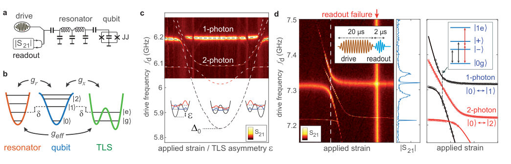

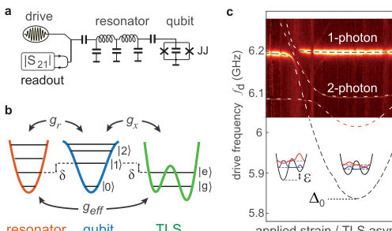
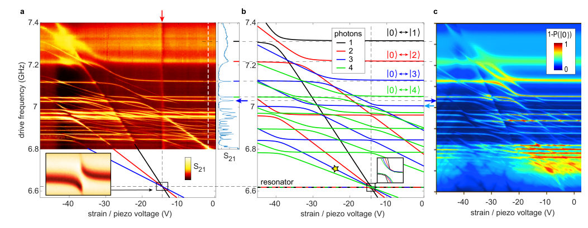
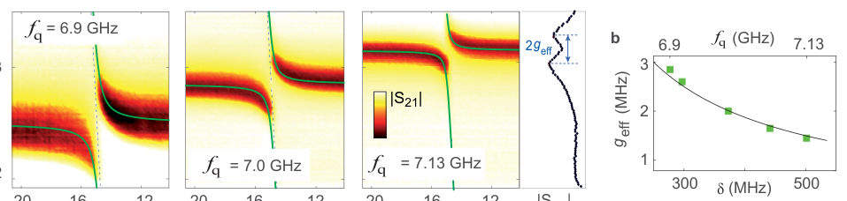
Highlighted author(s): Alexey V. Gorshkov
Authors: Won Chan Lee, Ali Fahimniya, Kellen O'Brien, Yu-Xin Wang, Alexandra Behne, Maya Amouzegar, Alexey V. Gorshkov, Alicia J. Kollár
Type: both · Category: other · PDF: https://arxiv.org/pdf/2605.00983v1
Analysis basis: full PDF text, analyzed in chunks
Topic relevance: 🔥 QC/QI experiment 4/5 · 🔥 quantum optics experiment 4/5 · Tavis-Cummings & cavity-many-emitter 3/5 · correlated cavity matter 3/5 · analog quantum simulation 2/5 · non-equilibrium dynamics 2/5
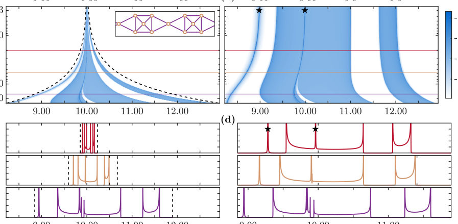
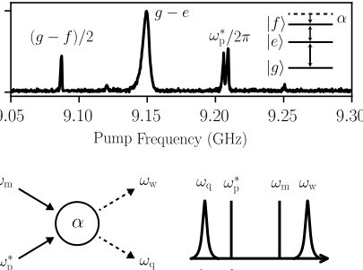
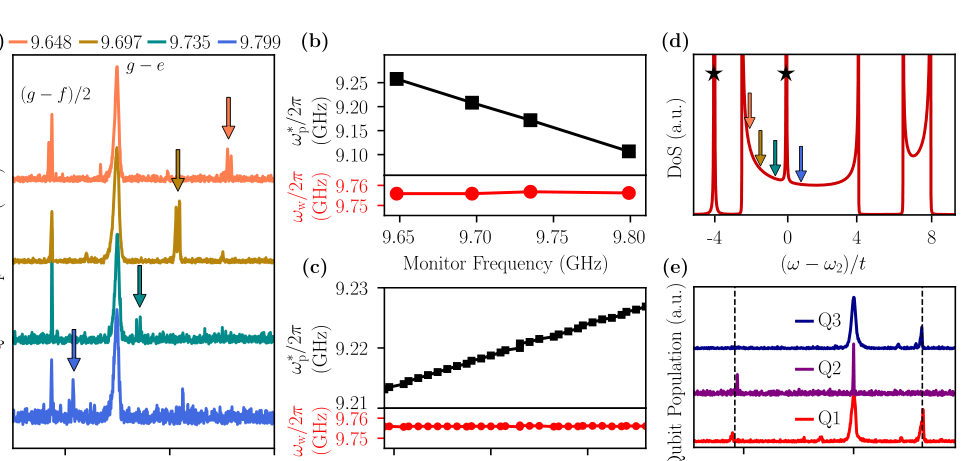
Summary. This paper explores the physics of multimode strong coupling in a circuit QED lattice, revealing new band structure features like emergent gaps and frequency-dependent hopping. It experimentally demonstrates a four-wave-mixing process that is uniquely driven by localized flat-band modes. The work bridges the gap between circuit-level dynamics and effective many-body lattice models.
Why it may be interesting. It provides a deep look into how strong coupling in a multi-mode environment breaks standard approximations (like tight-binding or RWA) and demonstrates how localized flat-band modes can be used to mediate complex nonlinear photon-photon interactions.
Main problem. Investigating phenomena arising from multimode strong coupling in circuit QED lattices, specifically addressing the limitations of standard tight-binding models and identifying new nonlinear processes like four-wave mixing.
Main result. The study reveals that beyond-tight-binding effects lead to emergent band gaps and frequency-dependent hopping, and experimentally demonstrates a strong four-wave-mixing process dominated by localized flat-band modes.
Method. A combination of a circuit Lagrangian analysis using a lumped-element approach and experimental two-tone spectroscopy (pump-probe) on a superconducting circuit lattice.
Model / system. A quasi-1D superconducting coplanar-waveguide (CPW) lattice consisting of nine unit cells with six resonators per cell, incorporating flux-tunable transmon qubits.
Key observables. Density of States (DoS), band structure evolution, four-wave-mixing resonances, qubit population (via IQ distance), and AC Stark shifts.
Important parameters / regimes. Strong-coupling regime, hopping parameter t (2.5 to 250 MHz), qubit frequency (approx. 9.15 GHz), and transmon anharmonicity (-125 MHz).
Assumptions / limitations. The tight-binding model is valid only for small hopping strengths; higher CPW harmonics are excluded as they lie well above the qubit operating frequencies.
Figures summary. Figure 1 shows simulated DoS and band evolution with varying hopping; Figure S1 shows the device photo and band structure; Figure S7 shows two-tone spectroscopy with qubit transitions and FWM resonances.
Paper structure. The paper introduces the multimode strong-coupling problem, presents a circuit Lagrangian analysis to identify new band features, describes the experimental CPW lattice platform, details the observation of four-wave-mixing, and provides a theoretical validation of the FWM mechanism and symmetry.
Circuit QED systems provide an ideal platform for exploring the strong-coupling regime of multimode cavity QED. Here we present two new phenomena from multimode strong coupling: a circuit Lagrangian analysis which captures beyond tight-binding effects of strong photon-photon coupling and experimental observation of strong wave-mixing resonances in the qubit response. Our circuit analysis reveals qualitatively new features such as emergent band gaps, lifted degeneracies, broadened flat bands, and frequency-dependent hopping. Within the multimode photon environment, strong qubit-photon coupling in turn gives rise to multiphoton processes involving multiple normal modes. We demonstrate a strong four-wave-mixing process involving excitation of a qubit and simultaneous frequency conversion between modes. Notably, this wave-mixing process is dominated by localized flat-band modes of the photonic lattice, which exhibit the strongest coupling to the transmon qubit.
Highlighted author(s): Susanne F. Yelin
Authors: Henning Schlömer, Liyuan Chen, Susanne F. Yelin, Hong-Ye Hu
Type: theory · Category: strongly correlated electrons · PDF: https://arxiv.org/pdf/2605.01029v1
Analysis basis: full PDF text, analyzed in chunks
Topic relevance: 🔥 correlated / nonlocal dissipation 4/5 · 🔥 methods for driven-dissipative 4/5 · analog quantum simulation 3/5 · driven-dissipative phase transition 2/5 · non-equilibrium dynamics 2/5 · entanglement & information structure 1/5
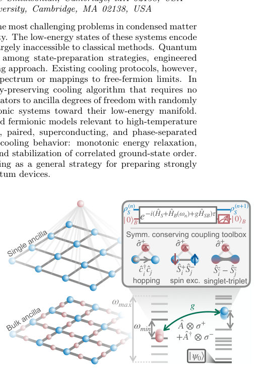
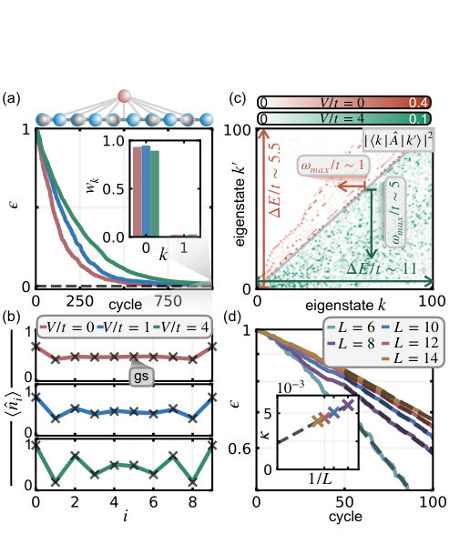
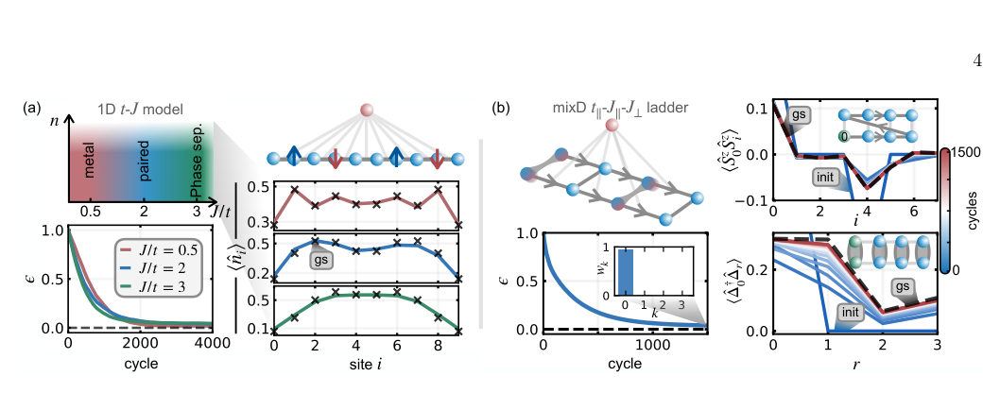
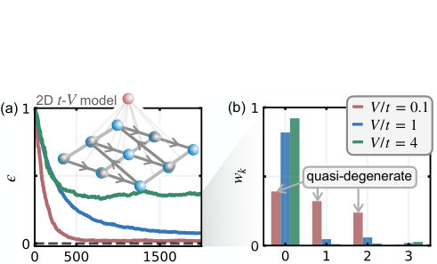
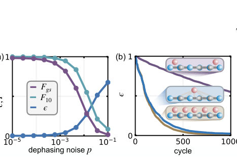
Summary. This paper introduces a new cooling algorithm that uses randomized dissipation to prepare the ground states of strongly interacting fermions. Unlike previous methods, it does not require knowledge of the system's energy spectrum, making it highly versatile for complex models like the t-J model. The protocol is shown to be robust against noise and effective at stabilizing various correlated phases.
Why it may be interesting. It presents a general-purpose, model-agnostic strategy for state preparation on programmable quantum devices, specifically addressing the challenge of cooling systems where the energy spectrum is unknown.
Main problem. Preparing the low-energy ground states of strongly interacting fermionic systems is difficult because classical methods suffer from the sign problem and existing quantum protocols require prior knowledge of the system's energy spectrum.
Main result. The authors demonstrate a randomized, model-agnostic dissipative cooling algorithm that achieves monotonic energy relaxation and stabilizes correlated ground-state order without needing spectral information.
Method. A randomized dissipative protocol where the system is coupled to ancilla degrees of freedom via local, symmetry-preserving operators and randomly sampled energy splittings, followed by ancilla reset cycles.
Model / system. The study focuses on strongly interacting fermionic lattice models, including the 1D spinless t-t'-V chain, the t-J model, and a 2D spinless fermion lattice, all relevant to high-temperature superconductors.
Key observables. Normalized energy density, ground-state fidelity, local densities, spin-spin and pair-pair correlations, and the relaxation rate.
Important parameters / regimes. Coupling strength g, interaction time tau, ancilla frequency range [omega_min, omega_max], interaction strengths (t, t', V, J), and dephasing probability p.
Assumptions / limitations. The protocol relies on the Rotating Wave Approximation (RWA) for the system-ancilla coupling and assumes the Eigenstate Thermalization Hypothesis (ETH) to ensure sufficient spectral connectivity.
Figures summary. Figure 1 shows the cooling algorithm schematic and coupling toolbox; Figure 5 compares stability against dephasing and different ancilla architectures; Figure 6 compares directed vs. random hopping sequences.
Paper structure. The paper introduces the problem of state preparation, describes the randomized dissipative algorithm and its coupling toolbox, presents benchmarks on various correlated fermionic models, analyzes scalability and noise robustness, and concludes with limitations and open questions.
Strongly interacting fermions underpin some of the most challenging problems in condensed matter physics, such as high-temperature superconductivity. The low-energy states of these systems encode their essential microscopic properties, yet remain largely inaccessible to classical methods. Quantum simulation offers a promising path forward, and among state-preparation strategies, engineered dissipation has emerged as a particularly compelling approach. Existing cooling protocols, however, typically rely on knowledge of the quasiparticle spectrum or mappings to free-fermion limits. In this letter, we introduce a randomized, symmetry-preserving cooling algorithm that requires no spectral information, using only local coupling operators to ancilla degrees of freedom with randomly sampled energy splittings to drive generic fermionic systems toward their low-energy manifold. We benchmark the protocol on canonical correlated fermionic models relevant to high-temperature superconductors, spanning metallic, density-wave, paired, superconducting, and phase-separated phases. Across all models, we observe universal cooling behavior: monotonic energy relaxation, concentration of spectral weight at low energies, and stabilization of correlated ground-state order. Our results establish randomized dissipative cooling as a general strategy for preparing strongly correlated fermionic states on programmable quantum devices.
Authors: Ivan Gnusov, Paolo Comaron, Antonio Gianfrate, Dimitrios Trypogeorgos, Marzena Szymanska, Paolo Cazzato, Milena De Giorgi, Daniele Sanvitto, Dario Ballarini
Type: both · Category: statistical mechanics · PDF: https://arxiv.org/pdf/2605.02397v1
Analysis basis: full PDF text, analyzed in chunks
Topic relevance: 🔥 non-equilibrium universality 5/5 · 🔥 driven-dissipative phase transition 4/5 · 🔥 non-equilibrium dynamics 4/5 · quantum optics experiment 3/5 · Keldysh / 2PI / non-Gaussian methods 2/5 · analog quantum simulation 2/5 · methods for driven-dissipative 2/5
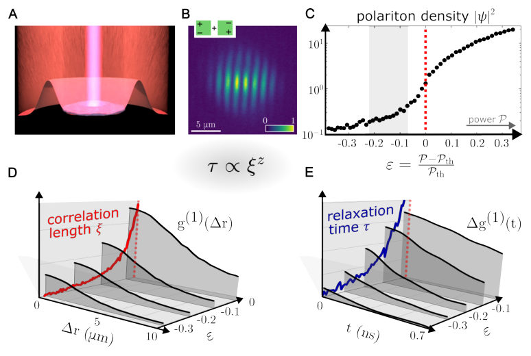
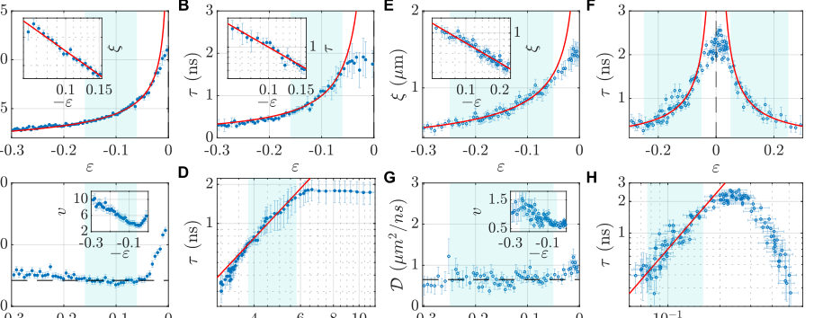
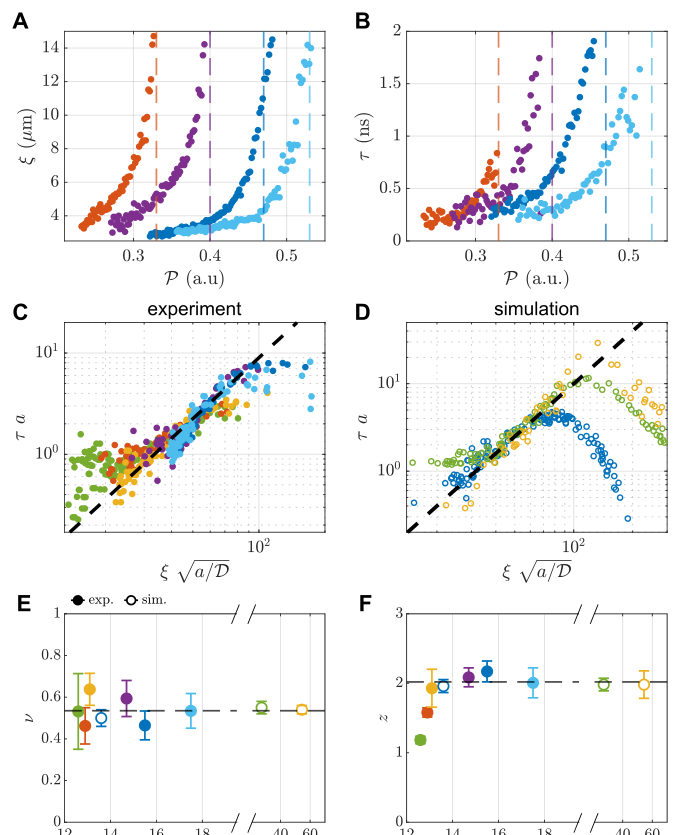
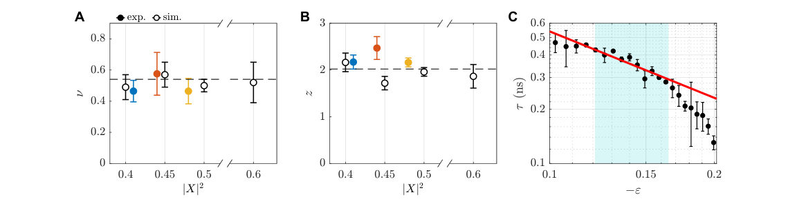
Summary. This paper demonstrates that a driven-dissipative fluid of light exhibits universal critical dynamics near its condensation threshold. By measuring both spatial and temporal scales, the authors confirm a dynamical exponent of z approximately 2, characterizing the system as a diffusive non-conserved order parameter. This result extends the concept of universality from equilibrium many-body systems to driven optical systems.
Why it may be interesting. It provides a rare direct experimental verification of dynamical universality in a non-equilibrium system, bridging the gap between the physics of lasers and equilibrium quantum condensates.
Main problem. Determining whether dynamical universality and critical scaling relations, specifically the link between spatial correlations and temporal relaxation, persist in driven-dissipative, non-equilibrium quantum fluids.
Main result. The researchers observed that the system obeys the universal scaling relation tau proportional to xi^z with a dynamical exponent z approximately 2, indicating diffusive dynamics of a non-conserved order parameter.
Method. The study combines experimental measurements of spatial coherence and temporal relaxation in polariton condensates with numerical simulations of the stochastic complex Ginzburg-Landau equation.
Model / system. A driven-dissipative quantum fluid of light formed by exciton-polaritons in a semiconductor microcavity, modeled by a stochastic complex Ginzburg-Landau equation or driven-dissipative Gross-Pitaevskii equation.
Key observables. Correlation length (xi), relaxation time (tau), dynamical exponent (z), static exponent (nu), diffusion coefficient (D), and first-order coherence function (g1).
Important parameters / regimes. Reduced pump power (epsilon), excitonic fraction (|X|^2), trap diameter (L), and the control parameter for the phase transition.
Assumptions / limitations. The analysis assumes the adiabatic approximation where the reservoir follows the condensate, and uses a linearized version of the SCGLE below the threshold.
Figures summary. Figures show the experimental setup, the growth of correlation length and relaxation time near threshold, power-law fits for critical exponents, and data collapse achieved through rescaling for different trap sizes.
Paper structure. The paper introduces the problem of non-equilibrium universality, describes the experimental and numerical platforms, presents the measurement of spatial and temporal scales, demonstrates the scaling relation and universality class, and concludes with a discussion on finite-size effects and robustness.
Universal scaling near phase transitions is one of the central ideas of physics, linking the growth of spatial correlations to the slowing down of dynamics. So far, direct experimental access to this critical behavior has remained largely confined to equilibrium many-body systems, and especially to static critical behavior. Here we probe how universality emerges in a driven quantum fluid of light formed by exciton--polaritons in a semiconductor microcavity. By probing the fluctuation-dominated disordered phase below the condensation threshold, we directly measure both the static growth of the correlation length $ξ$ and the dynamical slowing down of the relaxation time $τ$. We find that these quantities obey the universal relation $τ\propto ξ^{z}$ with dynamical exponent $z \approx 2$, revealing diffusive dynamics of a non-conserved order parameter. Our results extend the physics of critical dynamics from equilibrium matter to driven optical systems, bridging quantum condensates and lasers.
Authors: Peter DelMastro, Daniel Appelö, Yingda Cheng
Type: theory · Category: numerical methods · PDF: https://arxiv.org/pdf/2605.01494v1
Analysis basis: full PDF text, analyzed in chunks
Topic relevance: 🔥 methods for driven-dissipative 5/5 · non-equilibrium dynamics 3/5 · Tavis-Cummings & cavity-many-emitter 2/5 · correlated / nonlocal dissipation 2/5 · correlated cavity matter 2/5 · driven-dissipative phase transition 2/5 · entanglement & information structure 2/5 · exotic spin models in light-matter 2/5
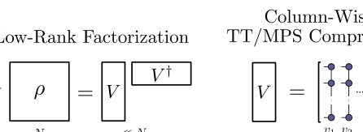
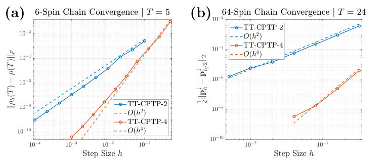
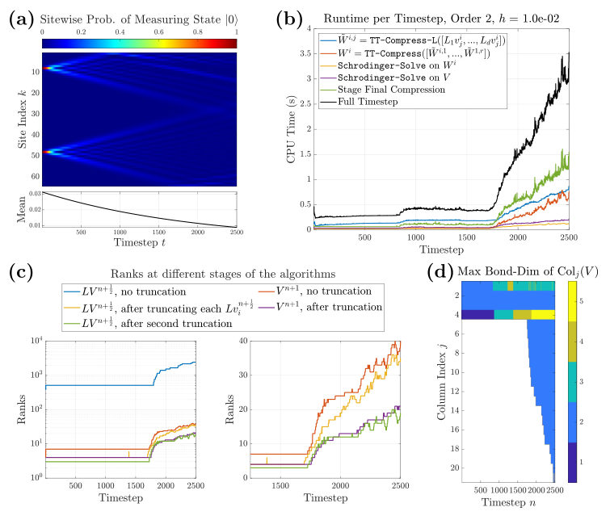
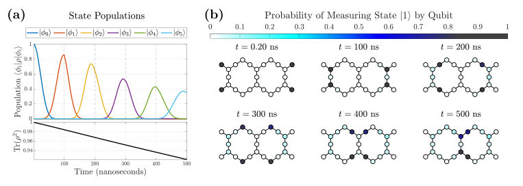
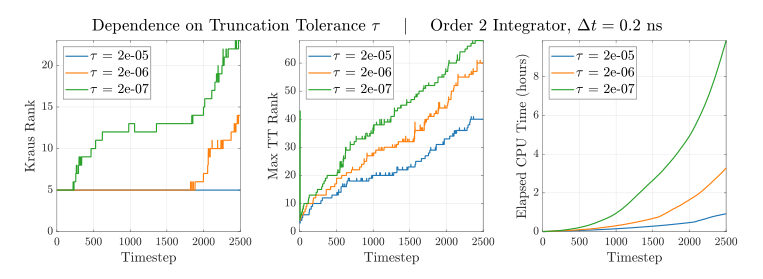
Summary. The paper introduces a new numerical method for solving the Lindblad equation by combining a low-rank density matrix factorization with Tensor Train compression. This two-level approach allows for the efficient simulation of massive quantum systems, such as those with 10^19 degrees of freedom, while strictly maintaining the physical requirements of complete positivity and trace preservation.
Why it may be interesting. This paper provides a highly scalable, physically consistent framework for simulating dissipative many-body dynamics, offering a way to bypass the curse of dimensionality in open quantum systems using advanced tensor network compression.
Main problem. Simulating the time evolution of large-scale open quantum systems is computationally intractable due to the exponential growth of the Hilbert space. The challenge is to develop a numerical scheme for the Lindblad equation that is efficient via compression while strictly preserving physical properties like Complete Positivity and Trace Preservation (CPTP).
Main result. The authors present a two-level low-rank CPTP-preserving scheme that scales to systems with up to 10^19 degrees of freedom. The method demonstrates efficient memory compression (up to 10,000x) and maintains convergence for complex dynamics like qudit-resonator chains and 1D spin chains.
Method. The scheme uses a 'Kraus is King' framework where the density matrix is factorized into tall-skinably matrices (rho = VV^dagger) and the columns of V are represented in the Tensor Train (TT/MPS) format. It employs randomized rounding, norm screening, and MPO-based operator splitting to manage truncation errors and computational complexity.
Model / system. The primary model is the Lindblad master equation for open quantum systems. Specific systems studied include a 1D dissipative spin-1/2 XX Heisenberg chain and a chain of alternating transmon qudits and resonators with self-Kerr and cross-Kerr interactions.
Key observables. Trace distance/error, probability of measuring a spin in the down state, expected energy levels of subsystems, density matrix rank, and MPS bond dimension.
Important parameters / regimes. Truncation tolerance (tau), bond dimension (b_k), dissipation timescale (T_decay), and the error allocation parameter (alpha).
Assumptions / limitations. The density matrix is assumed to remain in a low-rank regime; the efficiency of the Taylor series approach depends on the growth of bond dimensions during the flow operator application; and the splitting scheme introduces a second-order error.
Figures summary. Figure 1 shows the two-level low-rank decomposition; Figure 2 shows error convergence for spin chains; Figure 7 illustrates the qudit-resonator chain layout; Figure 8 shows the evolution of energy levels; Figure 9 displays scaling of rank and bond dimension with respect to tolerance and a breakdown of computational runtime.
Paper structure. The paper introduces the problem of Lindblad simulation, proposes a two-level low-rank TT/MPS scheme, details the mathematical mechanics of the 'Kraus is King' integrator, describes specific algorithmic optimizations like randomized rounding and norm screening, and concludes with numerical demonstrations on spin chains and qudit-resonator systems.
We propose a family of low-rank, completely positive and trace preserving schemes for the Lindblad equation, a common model for open quantum systems. Low-rank representation is employed at two levels: the density matrix is factorized into the product of tall-skinny matrices, and the columns of these matrices are further represented using the tensor train (TT) format, also know as matrix product states (MPS). This two-level low-rank format fits naturally into our existing Kraus is King scheme (arXiv:2409.08898v2 [math.NA]) for the Lindblad equation, whose underlying operations are arithmetic on the columns of the tall-skinny matrices. We show how these operations can be performed efficiently in the TT/MPS format, with particular emphasis on density matrix rank-truncation. We conclude with extensive numerical experiments demonstrating the convergence of this scheme and its efficiency in simulating systems with up to $10^{19}$ degrees of freedom using only modest compute resources.
Authors: Felipe D. Picoli, Gustavo Diniz, Luiz N. Oliveira
Type: theory · Category: statistical mechanics · PDF: https://arxiv.org/pdf/2605.01612v1
Analysis basis: full PDF text, analyzed in chunks
Topic relevance: 🔥 Kondo & dissipative impurity 5/5 · 🔥 non-equilibrium dynamics 4/5 · non-equilibrium universality 3/5 · correlated / nonlocal dissipation 2/5 · driven-dissipative phase transition 2/5 · entanglement & information structure 2/5 · methods for driven-dissipative 2/5
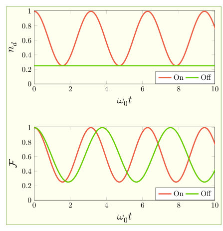
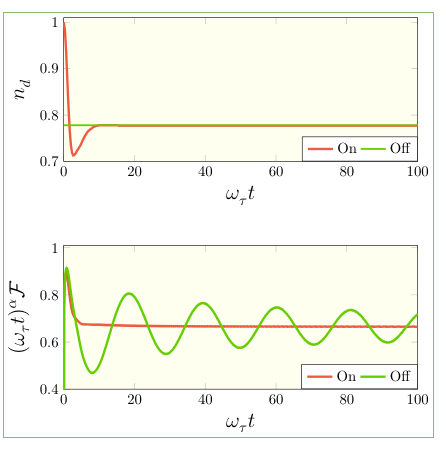
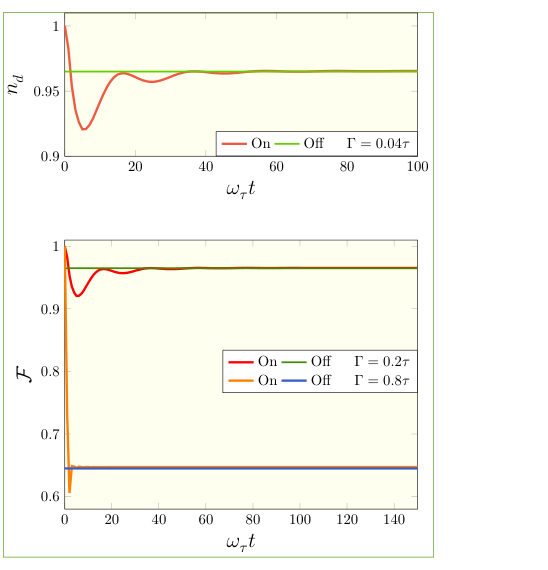
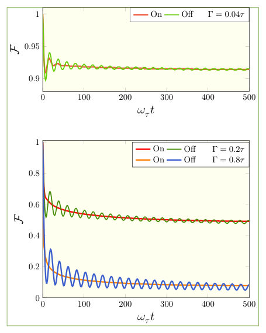
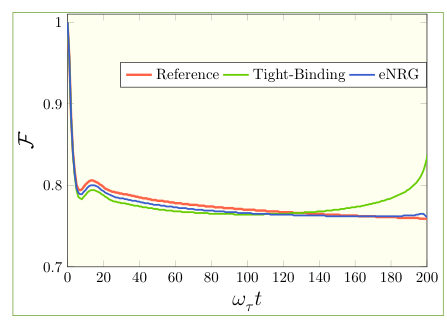
Summary. This paper explores how suddenly coupling an impurity to a metal leads to the decay of quantum coherence. It demonstrates that while small systems show artificial revivals, using advanced numerical methods like eNRG reveals a true transition to irreversible decoherence driven by particle-hole excitations.
Why it may be interesting. It provides deep insights into the fundamental mechanisms of dephasing and the transition from unitary to dissipative dynamics in open quantum systems, specifically through the lens of the orthogonality catastrophe.
Main problem. Investigating the nonequilibrium dynamics and the loss of quantum coherence (dephasing) in a quantum impurity system following sudden quenches of the coupling to a metal.
Main result. The study establishes a unified picture of the crossover from coherent Rabi oscillations to irreversible decoherence, identifying the Anderson orthogonality catastrophe and Nozières-De Dominicis mechanisms as drivers of power-law decay in fidelity.
Method. The authors combine analytical solutions for the single-site limit with numerical approaches, specifically using the embedded Numerical Renormalization Group (eNRG) and exact diagonalization to suppress finite-size artifacts.
Model / system. A spinless resonant level model consisting of a single impurity orbital coupled to a tight-binding metal lattice via a time-dependent hybridization term.
Key observables. Quantum fidelity (survival probability), impurity occupation, and phase shifts at the Fermi level.
Important parameters / regimes. Impurity energy (epsilon_d), hybridization strength (Gamma), lattice size (L), and the hopping parameter (tau).
Assumptions / limitations. The study is restricted to an uncorrelated (noninteracting) Hamiltonian and focuses on the small coupling regime.
Figures summary. Figure 1 shows impurity occupation and fidelity for switching coupling on vs. off; Figure 2 displays non-monotonic decay of occupation and monotonic decay of fidelity; Figure 3 shows fidelity decay for different hybridization strengths; Figure 4 shows damped oscillations in occupation; Figure 5 compares eNRG accuracy against flawed tight-binding diagonalization.
Paper structure. The paper begins by establishing the single-site limit, moves to analyzing finite-size effects and discretization techniques, presents the results for sudden quenches (on and off), and concludes with a discussion of the physical mechanisms of decoherence and limitations of the model.
We investigate the nonequilibrium dynamics and loss of coherence in a quantum impurity system using the spinless resonant level model subject to sudden quenches of the hybridization between the impurity and the metal. The survival probability (fidelity) and impurity occupation are analyzed as probes of the dephasing induced by particle-hole excitations. For finite systems, the loss of coherence loss is only apparent, as discrete spectra lead to quasi-periodic dynamics and revivals when phases realign. We show that a mixed linear-logarithmic discretization suppresses these finite-size artifacts by rendering excitation energies incommensurate, thereby reducing revivals. Starting from the exactly solvable two-level limit exhibiting coherent Rabi oscillations, we extend the analysis to large lattices, where damping and relaxation emerge. Combining analytical and numerical results, we provide a unified picture of the crossover from coherent oscillations to effectively irreversible decoherence.
Authors: Wen-Jie Geng, Zhenming Zhang, Wei Yi
Type: theory · Category: other · PDF: https://arxiv.org/pdf/2605.01366v1
Analysis basis: full PDF text, analyzed in chunks
Topic relevance: 🔥 scars & prethermalization 5/5 · 🔥 Rydberg arrays 4/5 · analog quantum simulation 3/5 · non-equilibrium dynamics 3/5 · entanglement & information structure 2/5 · exotic spin models in light-matter 2/5
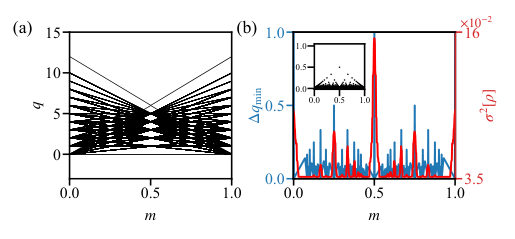
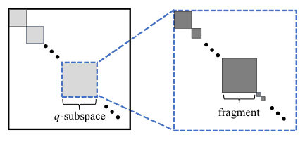
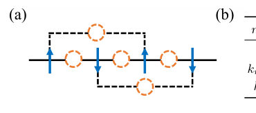
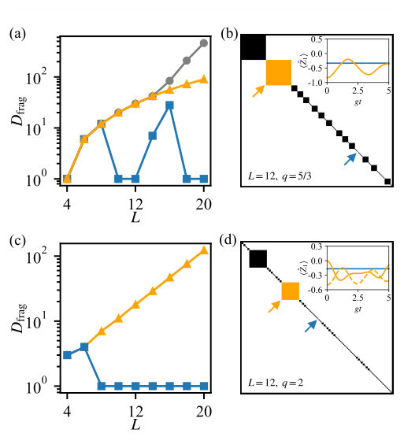
Summary. This paper investigates how the interplay between detuning and long-range interactions leads to Hilbert-space fragmentation in Rydberg atom arrays. It reveals that emergent kinetic constraints cause the system to break into many disconnected fragments, some of which exhibit frozen dynamics. The findings provide a way to understand and potentially engineer non-ergodic many-body dynamics beyond the standard PXP model.
Why it may be interesting. This paper is highly relevant for many-body dynamics and AMO physics as it provides a systematic framework for engineering non-ergodic dynamics and understanding how local constraints can be used to control Hilbert-space structure in Rydberg-based quantum simulators.
Main problem. Understanding the emergence of Hilbert-space fragmentation and non-ergodic dynamics in Rydberg atom arrays beyond the standard PXP model, specifically how tunable detuning and long-range interactions drive subspace fragmentation.
Main result. The authors show that Hilbert-space fragmentation is driven by emergent kinetic constraints and that the existence of well-defined subspaces depends on the rationality of the detuning-to-interaction ratio. They further demonstrate that even within these subspaces, the system is strongly fragmented into an exponentially growing number of disconnected Krylov subspaces.
Method. The study employs an analytical approach using the Thomae function and number theory to characterize spectral gaps, an auxiliary fermion description to reveal kinetic constraints, and Krylov subspace analysis via numerical simulations.
Model / system. One-dimensional Rydberg atom arrays with long-range, finite-range interactions described by a Hamiltonian involving Rabi frequency, detuning, and van der Waals-type interactions.
Key observables. Minimum spectral gap, fragment dimension, fragment connectivity, number of fragments, and fragment dimension scaling with system size.
Important parameters / regimes. Detuning-to-interaction ratio (m), interaction range (r), interaction strength (V/g), and system size (L).
Assumptions / limitations. The analysis considers the thermodynamic limit (L to infinity) and assumes rational coefficients for the interaction range in the general case.
Figures summary. Figure 1 shows the level scheme for 1D Rydberg arrays; Figure 4 illustrates fragmentation in specific subspaces; Supplemental Figures show the decrease of the largest fragment ratio and the exponential growth of the number of fragments with system size.
Paper structure. The paper introduces the problem of non-ergodicity in Rydberg arrays, analyzes the spectral properties and existence of subspaces using number theory, develops an auxiliary fermion mapping to identify kinetic constraints, and provides numerical evidence for strong fragmentation and scaling behaviors.
In a strongly interacting Rydberg atom array, the dynamics are often constrained to the decoupled Hilbert subspaces, representing an intriguing paradigm for nonergodicity. By considering a variable detuning of the global Rydberg coupling, we show that, not only is the existence of these Hilbert subspaces dependent on the interplay of detuning and interaction, but they are also strongly fragmented, with the fragment dimensions exhibiting various scaling behaviors with increasing system size. The resulting constrained dynamics of the system are thus governed by the dimension and connectivity of these fragments. We then adopt an auxiliary fermion description to reveal the underlying emergent kinetic constraints for the subspace fragmentation and fragment-confined dynamics. Our results provide a systematic understanding of Hilbert-space fragmentation in Rydberg arrays, and shed light on engineering nonergodic many-body dynamics beyond the PXP model.
Authors: Hiroko Tomoda, Yu Nishizawa, Akihiro Machinaga, Takahiro Kashiwazaki, Takeshi Umeki, Shigehito Miki, Masahiro Yabuno, Hirotaka Terai, Daichi Okuno, Shuntaro Takeda
Type: experiment · Category: quantum information and computing · PDF: https://arxiv.org/pdf/2605.02536v1
Analysis basis: full PDF text, analyzed in chunks
Topic relevance: 🔥 quantum optics experiment 5/5 · 🔥 QC/QI experiment 4/5 · 🔥 interference shaping light 4/5 · quantum measurements 2/5
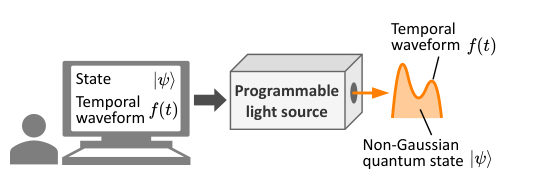
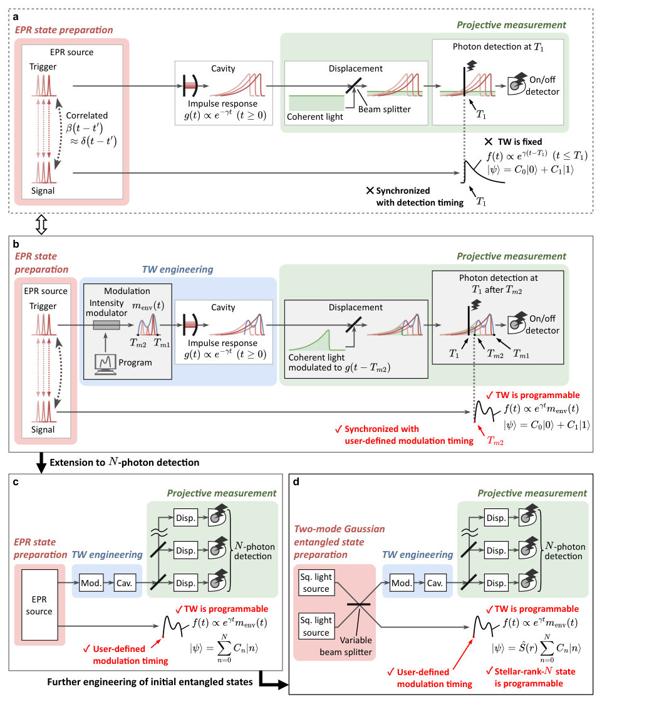
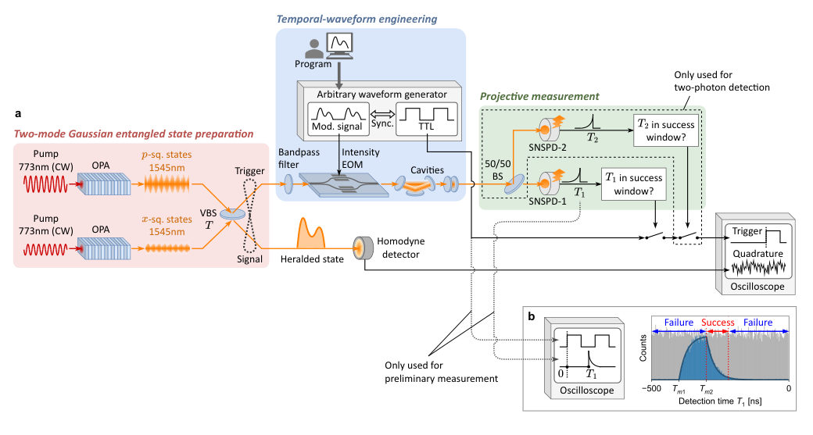
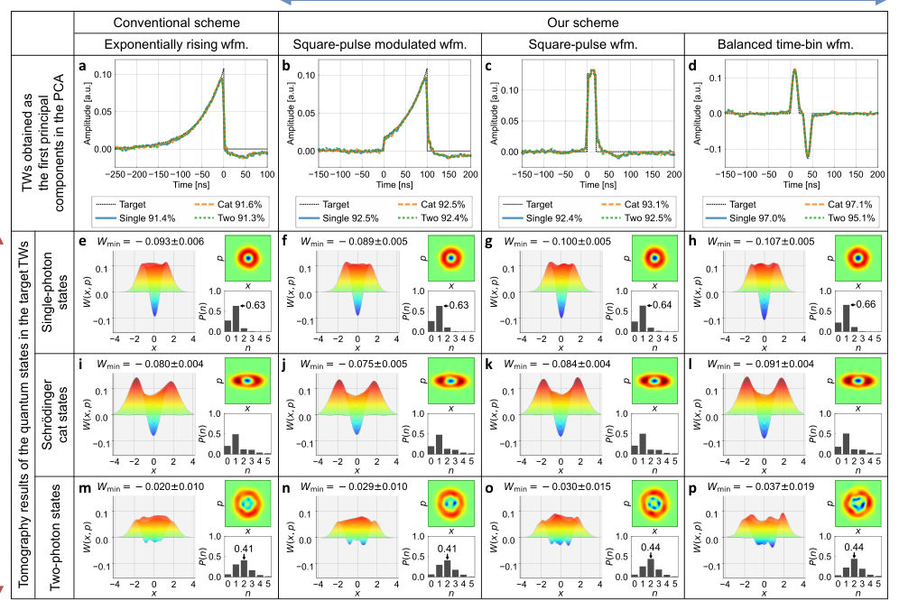
Summary. The researchers developed a new quantum light source that allows for the simultaneous and independent programming of a photon's quantum state and its temporal shape. By manipulating the heralding channel instead of the signal itself, they avoid the losses that typically degrade quantum states. This enables the high-fidelity generation of complex states like Schrödinger cat states in custom-designed temporal pulses.
Why it may be interesting. This work is highly relevant to quantum optics and photonic quantum information as it provides a versatile tool for tailoring wave-packets, which is essential for temporal-mode matching in quantum networks and coupling to quantum memories.
Main problem. Conventional non-Gaussian quantum light sources lack the ability to independently and programmably control both the quantum state and the temporal waveform, often requiring lossy direct manipulation.
Main result. The authors demonstrated a programmable source that achieves independent, arbitrary tunability of both quantum state and temporal waveform without degrading non-classical features, successfully generating single-photon, two-photon, and Schrödinger cat states.
Method. A heralding scheme is used where the quantum state and temporal waveform are engineered indirectly by manipulating light in the trigger channel via an electro-optic modulator (EOM) and displacement operations, avoiding losses in the signal channel.
Model / system. The experimental platform uses broadband waveguide optical parametric amplifiers (OPAs) pumped by a continuous-wave laser to create two-mode Gaussian entangled states, with an EOM and AWG for waveform shaping and SNSPDs for heralding.
Key observables. Wigner function minimum values, photon-number distributions, temporal-mode matching precision, and quadrature amplitude tomography via PCA.
Important parameters / regimes. Temporal waveform range (20-100 ns), photon-pair correlation time (~20 ps), modulation bandwidth (330 MHz), and total system loss (~33%).
Assumptions / limitations. The temporal correlation function is assumed to be much shorter than the cavity decay constant (delta-function approximation), and detector temporal resolution is assumed to be much shorter than the cavity decay constant.
Figures summary. Figure 1 shows the schematic of the programmable source; Figure 2 compares conventional vs. proposed setups; Figure 3 details the experimental setup components; Figure 4 displays reconstructed temporal waveforms and Wigner functions for various states.
Paper structure. The paper introduces the problem of programmability, proposes a heralding-based engineering scheme, details the experimental implementation using OPAs and EOMs, demonstrates the generation of various non-Gaussian states and waveforms, and concludes with a loss analysis.
A versatile quantum light source capable of programmably generating a variety of quantum light is a key enabler for photonic quantum technologies. In particular, independent control over both the output quantum state and its temporal waveform is essential for realizing diverse functionalities and enhancing processing performance. However, conventional sources of optical non-Gaussian states, a crucial resource for photonic quantum information processing, typically emit fixed states with predetermined temporal waveforms, lacking their programmability. Here, we propose a programmable non-Gaussian quantum light source that offers independent and arbitrary tunability of both the quantum state and the temporal waveform within a single platform. As a distinctive feature, our approach employs a heralding scheme in which these two properties are indirectly engineered to user-defined targets by manipulating the light in the heralding channel, thereby avoiding optical losses associated with direct manipulation of the heralded quantum light. We develop a prototype and demonstrate the generation of single-photon, Schrödinger cat, and two-photon states in a variety of unconventional temporal waveforms without degradation in state quality. This platform provides a versatile tool for tailoring quantum light to specific applications, significantly expanding the capabilities of photonic quantum technologies.
Authors: Etienne Granet, Ramil Nigmatullin, David T. Stephen, Henrik Dreyer
Type: both · Category: quantum information and computing · PDF: https://arxiv.org/pdf/2605.01440v1
Analysis basis: full PDF text, analyzed in chunks
Topic relevance: 🔥 QC/QI experiment 5/5 · correlated / nonlocal dissipation 2/5 · methods for driven-dissipative 2/5 · non-equilibrium dynamics 2/5 · quantum measurements 2/5
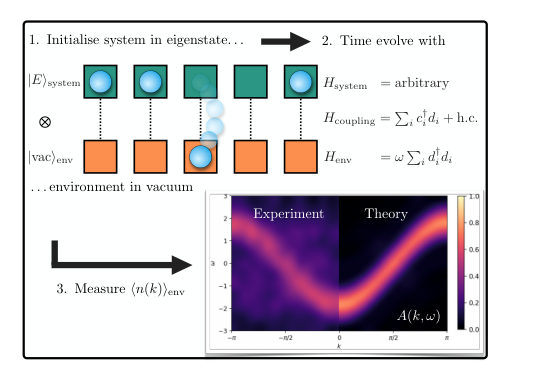
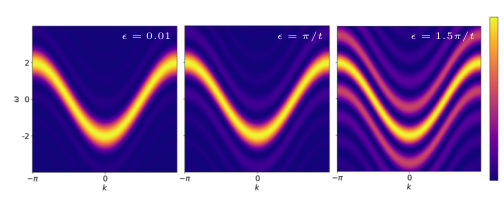
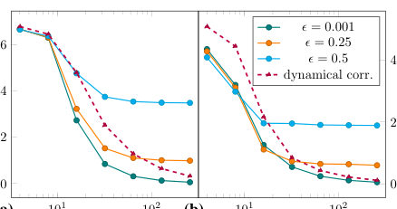
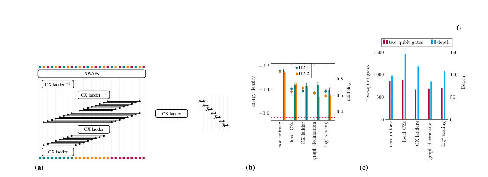
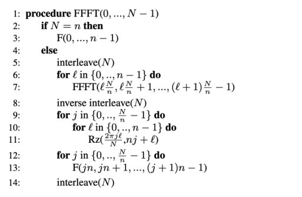
Summary. This paper presents a new quantum algorithm for measuring spectral functions that significantly reduces the number of required measurements by modeling a system-environment interaction. By implementing this on a 54-qubit ion-trap processor, the authors demonstrate that the method is both efficient and robust against Trotter errors. This approach allows for much faster extraction of band structures from quantum hardware.
Why it may be interesting. It provides a scalable way to extract dynamical properties of many-body systems from quantum hardware, specifically addressing the bottleneck of measurement shot noise and Trotter-induced unphysical results.
Main problem. Measuring spectral functions A(k, omega) on quantum computers is computationally expensive due to high sampling overhead and sensitivity to Trotter errors.
Main result. The authors introduce an efficient method that reduces sampling overhead by a factor of O(N) and demonstrates its effectiveness on a 54-qubit Quantinuum ion-trap processor.
Method. The approach models the system-environment interaction analogous to ARPES and uses a Fast Fermionic Fourier Transform (FFFT) to measure momentum occupation numbers in the environment.
Model / system. A 1D system of N sites coupled to an environment of N sites via a particle-conserving Hamiltonian, implemented on a Quantinuum H2 ion-trap quantum computer.
Key observables. Spectral function A(k, omega), momentum occupation number n(k), energy density, and infidelity.
Important parameters / regimes. Coupling strength epsilon, frequency omega, evolution time t, and system size N.
Assumptions / limitations. The method incurs a qubit overhead by requiring an environment (doubling the qubits) and a gate overhead due to the FFFT and interleave operations.
Figures summary. Figure 1 shows the method schematic and hardware vs. noiseless results; Figure 2 illustrates ghost bands at high coupling; Figure 3 compares Trotter error robustness; Figure 4-6 detail FFFT circuit implementations and optimizations; Figure 7-8 show hardware momentum distributions and spectral function accuracy.
Paper structure. The paper introduces the system-environment interaction model, derives the mathematical relationship to the spectral function, presents the FFFT algorithm and circuit optimization, and concludes with hardware benchmarking on the Quantinuum H2 system.
Spectral functions measured with angle-resolved photoemission spectroscopy (ARPES) provide key insight to elucidate the band structure of materials. Comparison with theory requires computing dynamical one-point functions in some equilibrium state, which can be classically challenging. Their measurement on quantum computers poses multiple problems and comes with a large sampling overhead when standard techniques are used. We introduce an efficient way of measuring spectral functions on a quantum computer by directly modeling the interaction of the system with the environment involved in ARPES experiments. We develop quantum circuits whose local expectation values are proportional to the spectral function $A(k,ω)$ for all momentum $k$ and a specific chosen frequency $ω$. Although coming with a qubit and two-qubit gate overhead, our approach requires $O(N)$ times less sampling than previous approaches, translating into a factor $O(N)$ faster in runtime, and is particularly adapted to ion-trap quantum computers. The algorithm requires to implement a fermionic Fourier transform (FFT). We write out an efficient gate decomposition for generic radix-$n$ FFT and benchmark it on hardware for radix-$3$ on $27$ qubits. We finally demonstrate our algorithm on a Quantinuum System Model H2 ion-trap system, computing the spectral function on a one-dimensional system of $27$ sites, using $54$ qubits.
Authors: Chi-Fang Chen
Type: theory · Category: statistical mechanics · PDF: https://arxiv.org/pdf/2605.02877v1
Analysis basis: full PDF text, analyzed in chunks
Topic relevance: 🔥 entanglement & information structure 4/5 · non-equilibrium dynamics 3/5 · quantum measurements 3/5 · correlated / nonlocal dissipation 2/5 · driven-dissipative phase transition 2/5 · methods for driven-dissipative 2/5 · scars & prethermalization 2/5
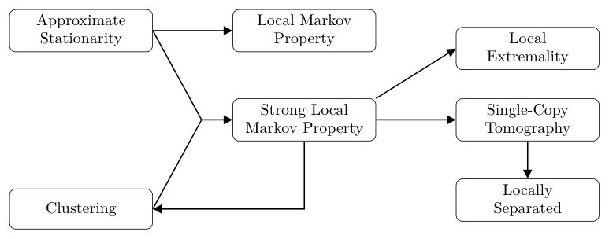
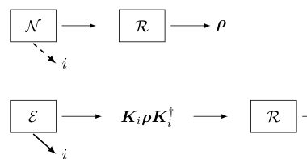
Summary. This paper introduces and characterizes the 'strong quantum Markov property,' a robust version of the local Markov property that holds even under post-selected measurements. It proves that this property is equivalent to correlation decay in metastable states and shows that it allows for the estimation of multiple observables from a single copy of a state.
Why it may be interesting. This work is highly relevant for researchers in open quantum systems and many-body dynamics as it provides a robust framework for understanding how local measurements and noise affect the stability and information content of many-body states.
Main problem. Characterizing the 'strong quantum Markov property' and establishing its relationship with correlation decay (clustering) and its operational consequences in many-body systems.
Main result. The paper proves that a metastable state satisfies the strong Markov property if and only if it exhibits correlation decay, and demonstrates that this property enables single-copy tomography and implies local extremality.
Method. The author uses the mathematical framework of Lindbladian master equations, quasi-local recovery maps, and the 1-norm to establish connections between clustering, metastability, and the strong Markov property.
Model / system. Quantum many-body systems consisting of n qubits with an interaction degree d, specifically focusing on Gibbs states and metastable states under Lindbladian dynamics with approximate detailed balance.
Key observables. Conditional mutual information, correlation decay (clustering), local marginals, and empirical mean estimators of measurement outcomes.
Important parameters / regimes. Inverse temperature (beta), interaction degree (d), error tolerances (epsilon), and recovery time (t).
Assumptions / limitations. The recovery map is assumed to be quasi-local and may require truncation via Lieb-Robinson bounds; the analysis assumes the existence of a shared recovery map for comparing states.
Figures summary. Figure 1 is a flowchart showing the logical connections between metastability, clustering, and the strong Markov property; Figure 2 compares the standard Markov property with the strong version via post-selected recovery.
Paper structure. The paper first defines the strong Markov property, then establishes the equivalence between this property and correlation decay, followed by an investigation of operational consequences including single-copy tomography, state distinguishability, and local extremality.
Quantum many-body Gibbs states satisfy an approximate local Markov property~\cite{chen2025GibbsMarkov}: local noise can be approximately recovered by a quasi-local recovery map, and the conditional mutual information decays for the corresponding tripartition. Recent work~\cite{bergamaschi2025structural} extends this property to approximate stationary states (metastable states) of certain master equations modeling system--bath dynamics, and proposes a strengthened post-selected recovery property requiring recovery to hold for each measurement outcome. In this note, we characterize this \textit{strong Markov property}: it holds if and only if the state additionally satisfies correlation decay for suitable pairs of observables. We further prove several structural and operational consequences of the strong Markov property in the presence of an underlying master equation. First, one can estimate multiple observables from a \textit{single copy} of the state via a repeated measurement--recovery protocol. Second, any two strongly Markov states must have local marginals that are either very close or well separated. Third, if a strongly Markov state can be expressed as a mixture of two strongly Markov states, then their local marginals must be nearly indistinguishable.
Authors: J. Lisenfeld, A. K. Händel, A. Bilmes, A. V. Ustinov
Type: both · Category: quantum information and computing · PDF: https://arxiv.org/pdf/2605.02755v1
Analysis basis: full PDF text, analyzed in chunks
Topic relevance: 🔥 QC/QI experiment 4/5 · quantum measurements 3/5 · quantum optics experiment 3/5 · Tavis-Cummings & cavity-many-emitter 2/5 · correlated / nonlocal dissipation 2/5 · methods for driven-dissipative 2/5 · non-equilibrium dynamics 2/5




Summary. This paper identifies how material defects (TLS) in superconducting qubit junctions can cause readout failure by shifting the resonator frequency. By using mechanical strain to tune the defects, the authors demonstrate a strong effective coupling between the TLS and the readout resonator. This finding highlights a critical mechanism for error in solid-state quantum processors.
Why it may be interesting. This work is highly relevant to open quantum systems and quantum optics as it demonstrates a complex three-body interaction (TLS-qubit-resonator) and explores how environmental defects can induce effective long-range couplings and frequency shifts in a driven-dissipative system.
Main problem. The paper investigates a new source of readout failure in superconducting qubits caused by strongly coupled two-level system (TLS) defects located in the Josephson junction tunnel barriers.
Main result. The researchers identified that a TLS-resonator interaction, mediated via virtual qubit excitations, causes a resonance frequency shift in the readout resonator that is large enough to spoil the dispersive readout signal.
Method. The study combines experimental strain-dependent spectroscopy using a piezo stack with numerical simulations of the system's time evolution using the QuTiP package and the Lindblad master equation.
Model / system. The system consists of a tunable transmon qubit (Al on Si) capacitively coupled to a readout resonator, interacting with a TLS in the junction tunnel barrier. The model includes a three-partite Hamiltonian involving the qubit (Duffing oscillator), resonator (harmonic oscillator), and TLS (two-level system).
Key observables. Transmitted signal amplitude (S21), qubit energy relaxation (T1), avoided-level crossings in the resonator spectrum, and multi-photon spectroscopy transitions.
Important parameters / regimes. TLS strain-coupling strength (gamma), qubit-resonator coupling (g_qr), TLS dipole moment, and the effective TLS-resonator coupling (g_eff).
Assumptions / limitations. The TLS-resonator interaction is assumed to be mediated via virtual qubit excitations (cross-resonance mechanism); the simulation assumes a restricted Hilbert space of 6 qubit, 6 resonator, and 2 TLS states.
Figures summary. Fig 1 shows the qubit circuit schematic, energy level diagrams, and spectroscopy showing avoided crossings and readout failure. Fig 2 shows multi-photon transitions at high drive power. Fig 9 displays raw S21 data vs piezo voltage and comparison with QuTiP simulations.
Paper structure. The paper introduces the problem of TLS-induced decoherence, describes the experimental setup and TLS tuning via strain, presents spectroscopic evidence of TLS-qubit-resonator interactions, details the identification of readout failure mechanisms, and concludes with a comparison of experimental data to numerical simulations.
Material defects give rise to parasitic two-level systems (TLS) which present a major source of decoherence in superconducting qubits. Here, we study a strongly coupled TLS that resides in the tunnel barrier of transmon qubit. We use multi-photon spectroscopy and TLS strain tuning to explore the rich spectrum of the interacting three-partite system consisting of TLS, qubit, and its readout resonator. This reveals a strong effective resonant coupling between the TLS and the qubit's readout resonator which dresses the resonator states and results in a resonance frequency shift that spoils the readout signal. Our finding presents yet another way how material defects can interfere with qubit operation and hinder the realization of solid-state quantum processors.
Authors: Vijay Kumar, Dibyendu Roy
Type: theory · Category: statistical mechanics · PDF: https://arxiv.org/pdf/2605.01969v1
Analysis basis: full PDF text, analyzed in chunks
Topic relevance: 🔥 driven-dissipative phase transition 4/5 · 🔥 non-equilibrium dynamics 4/5 · entanglement & information structure 2/5 · methods for driven-dissipative 2/5 · non-equilibrium universality 2/5 · scars & prethermalization 2/5
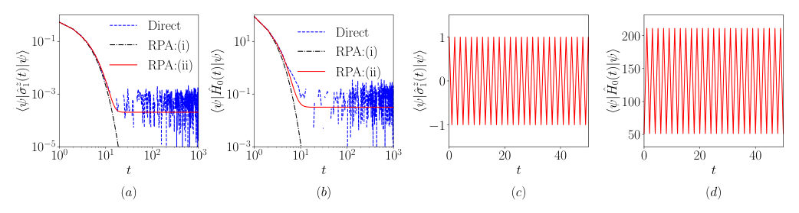
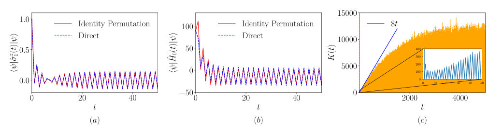
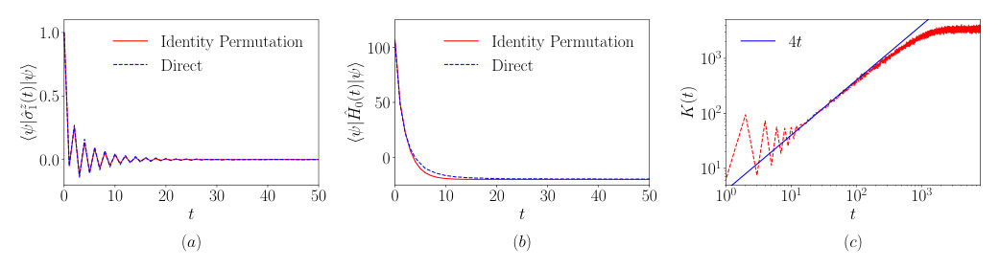
Summary. This paper provides an analytical study of how periodically driven many-body systems transition between ergodic and discrete time crystal phases. By using a random phase approximation and diagrammatic techniques, the authors explain how the long-time behavior of observables is determined by the eigenvalues of a stochastic matrix. The work demonstrates that the emergence of time crystals is linked to specific symmetries and can even be sensitive to the initial state of the system.
Why it may be interesting. This paper provides a rigorous analytical link between the algebraic properties of the Floquet operator and the emergence of non-equilibrium phases like DTCs, which is central to understanding many-body dynamics and Floquet engineering.
Main problem. Understanding the mechanisms behind thermalization and the emergence of discrete time crystal (DTC) phases in periodically driven, many-body quantum systems.
Main result. The authors analytically derive the criteria for the system to reach an infinite-temperature statistical average (ergodicity) versus exhibiting robust subharmonic oscillations (DTC phase), showing that the phase can depend on initial state preparation in certain models.
Method. The study employs a path integral decomposition of expectation values combined with a Random Phase Approximation (RPA) and a diagrammatic expansion to calculate next-to-leading-order corrections.
Model / system. Periodically kicked, nonintegrable, disordered, strongly interacting many-body quantum systems, specifically focusing on long-range transverse-field Ising spin chains.
Key observables. Local magnetization, total energy, and the spectral form factor (SFF).
Important parameters / regimes. Kicking strength (h), disorder strengths (delta epsilon, delta U0), interaction exponent (alpha), and driving period (tau_p).
Assumptions / limitations. The Random Phase Approximation (RPA) assumes phases are independent and uniformly distributed; the study also focuses on the strong disorder limit.
Figures summary. Figures show the time evolution of magnetization and energy, comparisons between numerical results and RPA (including NLO corrections), and the behavior of the spectral form factor in different phases.
Paper structure. The paper begins with an analytical framework for time evolution using path integrals, moves to the derivation of thermalization and DTC criteria via matrix analysis, provides numerical validation of the RPA and its corrections, and concludes with a detailed study of spectral statistics and symmetry-driven dynamics.
We analytically study the time evolution of the expectation values of observables in periodically kicked many-body quantum systems. Starting from an initial state, we compute both the transient and the long-time properties of the observables. Our derivation explains the criteria and the mechanism that lead to the infinite-temperature statistical average of observables at long times, irrespective of the initial state. When the criteria are violated, the observables oscillate with time. These oscillations are subharmonic and robust to small perturbations, suggesting the emergence of a discrete time crystal phase. We demonstrate these features explicitly in periodically kicked nonintegrable spin chains. For a spin chain with two kicks per cycle, we show that the kicked chain can exhibit an ergodic or a discrete-time crystal phase for the same kicking strengths, depending on the initial state preparation. We complement our time-evolution study of observables with the spectral form factor of these kicked models.
Authors: Christopher Campbell, Matti Silveri
Type: theory · Category: other · PDF: https://arxiv.org/pdf/2605.02412v1
Analysis basis: full PDF text, analyzed in chunks
Topic relevance: 🔥 correlated / nonlocal dissipation 4/5 · Dicke superradiance 3/5 · Tavis-Cummings & cavity-many-emitter 3/5 · methods for driven-dissipative 3/5 · non-equilibrium dynamics 2/5
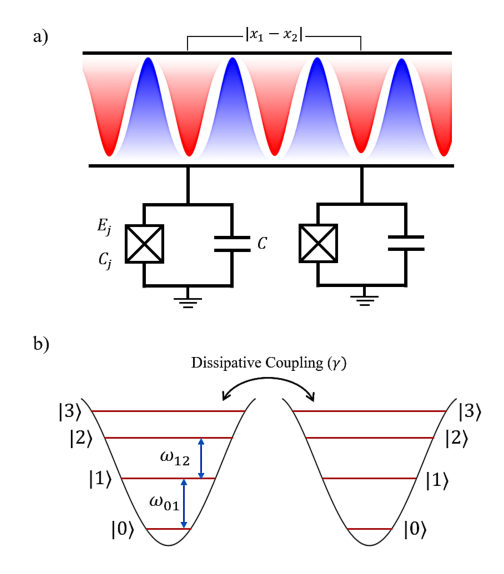
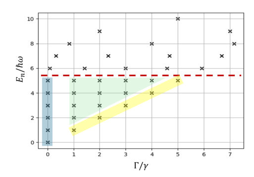
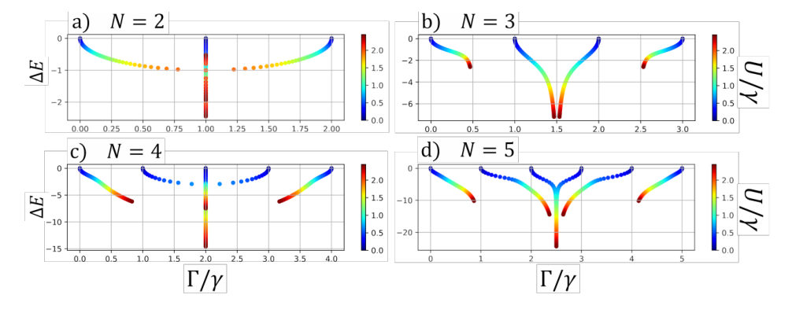
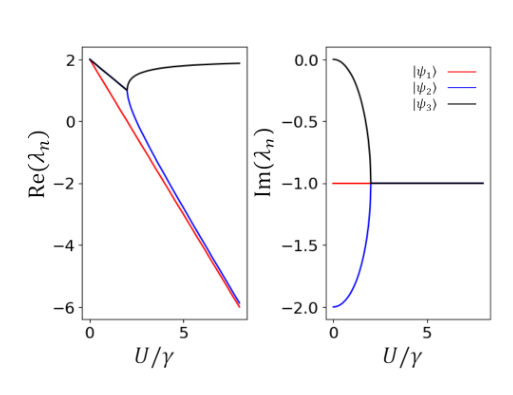
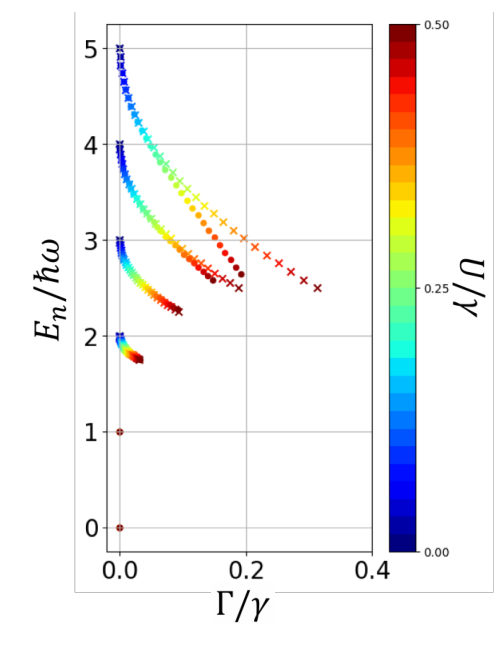
Summary. This paper analyzes how weak anharmonicity causes dark states in coupled photon-emitters to become dissipative. By using perturbation theory, the authors show that on-site interactions create a decay path through bright states and can lead to exceptional points. The results are highly accurate for small perturbations and provide insight into the cascading decay of excitations.
Why it may be interesting. It provides a tractable analytical framework for understanding how nonlinearity destroys decoherence-free subspaces in open quantum systems, which is critical for designing stable quantum memories in waveguide QED.
Main problem. Investigating how weak anharmonicity (on-site interactions) induces dissipation in dark states that are otherwise decoherence-free in harmonic systems.
Main result. The authors demonstrate that anharmonicity breaks the symmetry of dark states, creating a decay path via coupling to bright states, and identify the emergence of exceptional points in even excitation manifolds.
Method. A perturbative analysis using first and second-order corrections to the wavefunction and density matrix, validated against exact numerical evolution of the Lindblad master equation.
Model / system. A pair of weakly anharmonic photon-emitters (such as transmons) coupled via a dissipative medium, modeled using the Bose-Hubbard Hamiltonian and a non-Hermitian effective Hamiltonian.
Key observables. Complex eigenvalues (energy and decay rates), population relaxation of the dark state, and photon readout (rate of change of total excitation number).
Important parameters / regimes. Anharmonicity (U), dissipation rate (gamma), tunneling rate (J), and excitation manifold number (N).
Assumptions / limitations. The study assumes weak anharmonicity (U/gamma is small), negligible tunneling (J=0), and large site separation to ensure coherent interaction.
Figures summary. Figure 1 shows a schematic of transmons and the Bose-Hubbard model; Figure 5 compares analytical energy corrections to numerical results; Figure 6 shows population relaxation and photon readout dynamics.
Paper structure. The paper begins by defining the non-Hermitian Bose-Hubbard model, introduces a perturbative approach to handle anharmonicity, presents analytical results for energy and wavefunction corrections, and concludes with numerical validation and discussion of dynamics like photon bursts.
Dark states are excited quantum states that decouple from their environment in such a way that they do not emit or absorb external photons. These states are found in a variety of different open quantum systems and can be derived from the collective interactions of individual quantum emitters interacting with one another. One of the simplest model where these states exist is in a pair of dissipatively coupled harmonic oscillators described under the Bose-Hubbard model. When on-site interactions are included, these states can no longer be classified as genuine dark states since dissipation is induced in them. In this paper we study the origin of this dissipation in dark states by using weak anharmonicity as a perturbing factor. In our analysis, we find the first and second order corrections to the wavefunction and apply these corrections to the master equation in order to track the dynamics.
Authors: Fabian Künzel, Michael Schüler, Denis Golež, Yuta Murakami, Sujay Ray, Christopher Stahl, Jiajun Li, Hugo U. R. Strand, Philipp Werner, Martin Eckstein
Type: theory · Category: strongly correlated electrons · PDF: https://arxiv.org/pdf/2605.02606v1
Analysis basis: full PDF text, analyzed in chunks
Topic relevance: 🔥 methods for driven-dissipative 4/5 · 🔥 non-equilibrium dynamics 4/5 · driven-dissipative phase transition 2/5 · non-equilibrium universality 2/5 · scars & prethermalization 2/5
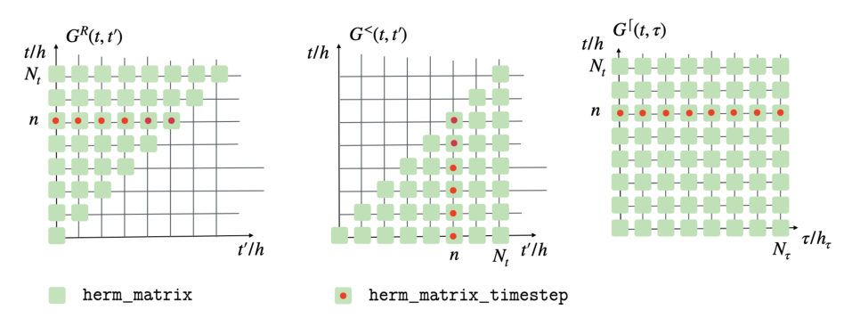
Summary. NESSi 2.0 is an updated software package for simulating non-equilibrium quantum many-body systems. It introduces memory-truncation techniques to enable much longer time-scale simulations and new tools for studying non-equilibrium steady states. This allows for more efficient study of phenomena like photo-induced phase transitions and thermalization.
Why it may be interesting. It provides a significant algorithmic advancement for simulating long-time many-body dynamics and steady states, which is crucial for studying thermalization and relaxation in driven quantum systems.
Main problem. The computational cost of solving Kadanoff-Baym equations for non-equilibrium many-body systems scales prohibitively as O(Nt^3) in CPU time and O(Nt^2) in memory, limiting simulations to short time scales.
Main result. The NESSi 2.0 package introduces memory truncation to reduce complexity to O(NtNc^2) and implements new functionalities for simulating time-translationally invariant non-equilibrium steady states (NESS).
Method. The package uses Keldysh formalism and Non-Equilibrium Dynamical Mean-Field Theory (DMFT), implementing a moving Green's function window for memory truncation and Fourier-space solvers for steady states.
Model / system. The software is designed for strongly correlated electron systems, including the Hubbard model, Mott insulators, and SYK models, specifically focusing on laser-induced dynamics and interaction quenches.
Key observables. Retarded, lesser, and advanced Green's functions, self-energy, spectral functions, and density matrices.
Important parameters / regimes. Memory cutoff (Nc), time step (h), total real-time (t_max), and inverse temperature (beta).
Assumptions / limitations. The memory truncation assumes the self-energy decays to zero after a certain time cutoff, and steady-state approximations assume the system is quasi-stationary or weakly coupled to reservoirs.
Figures summary. Figure 1 shows Green's function data structures; Figure 2 illustrates the memory-truncated domain and moving window; Figure 9 compares NESS and real-time results; Figure 10 shows numerical convergence with respect to frequency grid and timestep.
Paper structure. The paper introduces the NESSi 2.0 update, details the mathematical framework for memory truncation and steady-state simulations, describes the new C++/Python data structures, and provides benchmarks comparing NESS and real-time propagation.
Nonequilibrium Green's functions provide a powerful framework for studying quantum many-body dynamics including the laser-induced dynamics in solids. The Non-Equilibrium Systems Simulation package (NESSi) offers an efficient platform for such simulations, ranging from perturbative approaches like nonequilibrium $GW$ to nonequilibrium dynamical mean-field theory. However, simulations based on nonequilibrium Green's functions become computationally demanding when the dynamics span a large temporal range, such as from sub-femtosecond electron dynamics to the picosecond dynamics of collective modes. Due to the memory integral in the Kadanoff-Baym equations, which serve as equations of motion for nonequilibrium Green's functions, the computational cost scales as $\mathcal{O}(N_t^3)$ with the number of timesteps $N_t$, and the memory requirement scales as $\mathcal{O}(N_t^2)$. In this work, we extend NESSi by incorporating techniques that aim to overcome this bottleneck: (i) By truncating the memory integrals in the KBE to a maximum of $N_c$ timesteps, the computational complexity is reduced to $\mathcal{O}(N_tN_c^2)$, and the memory requirement to $\mathcal{O}(N_c^2)$. Provided that the results converge with respect to the cutoff $N_c$, memory truncation allows to extend the simulations to significantly longer times. (ii) We introduce functionalities to describe nonequilibrium steady states, i.e. time-translationally invariant nonequilibrium states. Such states are relevant for transport settings, and they provide an approximate description of slowly evolving (prethermal) nonequilibrium states.
Authors: Seyed Mohsen Moosavi Khansari
Type: theory · Category: quantum information and computing · PDF: https://arxiv.org/pdf/2605.02151v1
Analysis basis: full PDF text, analyzed in chunks
Topic relevance: 🔥 quantum measurements 4/5 · entanglement & information structure 3/5 · methods for driven-dissipative 3/5 · non-equilibrium dynamics 2/5 · spintronics-quantum-optics interface 2/5

Summary. This paper proposes a real-time feedback control method to protect entanglement in a two-qubit system subject to noisy magnetic fields. By dynamically adjusting the Dzyaloshinskii-Moriya interaction, the researchers significantly stabilize negativity and enhance the sensitivity of quantum magnetometry. The approach provides a robust way to maintain quantum resources in realistic, fluctuating environments.
Why it may be interesting. This work is highly relevant to open quantum systems and quantum metrology as it demonstrates a practical control strategy (PI feedback) to mitigate the effects of non-Markovian-like colored noise and directly links entanglement preservation to enhanced sensing precision.
Main problem. The degradation of quantum entanglement in two-qubit systems due to time-varying, stochastic magnetic fields and the challenge of preserving this resource for quantum sensing.
Main result. A Proportional-Integral (PI) feedback control protocol that dynamically adjusts the Dzyaloshinskii-Moriya interaction strength to stabilize entanglement, doubling time-averaged negativity and providing a 2.4-fold improvement in metrological sensitivity over the classical limit.
Method. The study uses a stochastic Lindblad master equation and quantum trajectory simulations (Monte Carlo wavefunction method) with an Euler-Maruyama scheme to model Ornstein-Uhlenbeck colored noise.
Model / system. A two-qubit system (XXX and XYZ Heisenberg models) interacting via Heisenberg exchange and Dzyaloshinskii-Moriya (DM) interaction, subject to stochastic magnetic fields and Lindblad-type decoherence (amplitude damping and dephasing).
Key observables. Negativity (as a measure of entanglement), Quantum Fisher Information (QFI) for field estimation, and the two-qubit correlation
Important parameters / regimes. Noise amplitude (sigma), noise correlation time (tau_c), DM interaction strength (D_z), anisotropy parameter (alpha), and the target negativity (N_target = 0.4).
Assumptions / limitations. The noise is modeled as an Ornstein-Uhlenbeck process (colored noise); the feedback control relies on an experimentally accessible proxy observable.
Figures summary. Figure 1 shows the calibration between negativity and the proxy observable; Figure 2 shows negativity decay under increasing noise; Figure 3 demonstrates stabilization via PI feedback; Figure 4 shows average negativity vs. initial DM strength; Figure 5 shows performance in the XYZ model.
Paper structure. The paper introduces the problem of noise-induced decoherence, defines the Heisenberg-DM Hamiltonian and stochastic noise model, presents the PI feedback control design, validates the proxy observable, and evaluates the resulting entanglement stabilization and metrological sensitivity gains.
Quantum entanglement is a key resource for quantum information processing and sensing, but it is severely degraded by environmental noise. We extend the previous study by Moosavi Khansari and Kazemi Hasanvand [27] of entanglement dynamics in a qubit qubit system with Dzyaloshinskii Moriya (DM) interaction and static magnetic fields to the realistic case of time varying, stochastic magnetic fields. We derive a stochastic Lindblad master equation and simulate quantum trajectories to quantify the negativity under colored noise. We then design a proportional integral feedback protocol that dynamically adjusts the DM interaction strength D_z (t) to maintain negativity near a target value. The feedback stabilized state is used as a probe for quantum metrology: we compute the quantum Fisher information (QFI) for estimating an unknown static field B_0. Our simulations show that feedback increases the time averaged negativity from 0.21 to 0.42 for α=1 at noise amplitude σ=0.5, leading to a factor 2.4 improvement in sensitivity over the classical shot noise limit. This work provides a practical route to protect entanglement in noisy environments and enhances quantum sensing performance.
Authors: Dorje C. Brody, Eva-Maria Graefe, Rishindra Melanathuru
Type: theory · Category: other · PDF: https://arxiv.org/pdf/2605.02696v1
Analysis basis: full PDF text, analyzed in chunks
Topic relevance: 🔥 quantum measurements 4/5 · methods for driven-dissipative 3/5 · Keldysh / 2PI / non-Gaussian methods 2/5 · correlated / nonlocal dissipation 2/5 · non-equilibrium dynamics 2/5 · entanglement & information structure 1/5
Summary. The paper demonstrates that continuous-time environmental monitoring and discrete phase-space measurements lead to distinct dynamical behaviors in angular momentum systems. It reveals that the two models yield different decay rates for spin multipoles and present conflicting definitions of the transition to classicality. This distinction is absent in spin-1/2 systems but becomes significant for higher spin magnitudes.
Why it may be interesting. This is highly relevant for researchers in open quantum systems and quantum optics as it identifies a fundamental breakdown of the 'flat phase space' intuition when applied to spin systems, specifically regarding how decoherence scales with spin magnitude.
Main problem. The paper investigates whether the equivalence between continuous-time Lindblad dynamics and discrete POVM measurements found in flat phase spaces extends to the spherical phase space of angular momentum systems.
Main result. The authors show that the two models are not equivalent for angular momentum systems (except for spin-1/2), leading to different decay rates for multipole moments and a discrepancy in how classicality is defined via density matrix decay versus quasiprobability positivity.
Method. The study uses an expansion in irreducible tensor operators, the Stratonovich-Weyl kernel for phase-space representations, and a microscopic derivation of the Lindblad equation via stochastic averaging over Gaussian white noise.
Model / system. The system consists of quantum angular momentum (spin) systems of magnitude J, modeled via two approaches: a Lindblad master equation representing isotropic environmental monitoring and iterated nonselective POVM measurements using SU(2) coherent states.
Key observables. Decay rates of density matrix elements (multipole moments), multipole sectors (orientation and alignment), and the positivity of quasiprobability distributions (Wigner, Husimi Q, and Glauber-Sudarshan P functions).
Important parameters / regimes. Spin magnitude J, Lindblad decoherence rate gamma, number of measurement iterations n, and the parameter sigma for the family of quasiprobability distributions.
Assumptions / limitations. The environment is modeled as isotropic Gaussian white noise with no preferred orientation, and the POVM measurements are assumed to be nonselective.
Figures summary. Figure 2 compares Wigner functions for different spin magnitudes (J=1 and J=5) under both models to show robustness; Figure 3 illustrates the decoherence of a highly quantum superposition state.
Paper structure. The paper begins with a microscopic derivation of the Lindblad equation from noise, compares the two decoherence models using tensor operator expansions, analyzes the decay of multipole moments, and concludes by discussing the implications for the emergence of classicality.
The monitoring of the three independent components of the angular momentum (or spin) of a quantum system by its environment that does not isolate any preferred orientation is modelled in two different ways. One describes the dynamics by the Lindblad equation generated by three independent angular momentum operators. The other uses iterated measurements of the ``phase-space'' point on the sphere in terms of the positive operator-valued measure generated by SU(2) coherent states. In contrast to the equivalent scenario on a flat phase space, these two models give rise to subtle differences. Specifically, it is shown that the two super-operators corresponding to the two decoherence models for angular momentum systems are commutative, but their eigenvalues are different. Hence although both models give rise to phase-space decoherence, their dynamical behaviours are not equivalent. In either model, we find that the characterisation of classicality as represented by the decay rates of the elements of the density matrix (i.e. decoherence) and that as represented by the positivity of the quasiprobability distribution are not equivalent for angular momentum systems.
Authors: Ylann Rouzaire
Type: theory · Category: statistical mechanics · PDF: https://arxiv.org/pdf/2605.02482v1
Analysis basis: full PDF text, analyzed in chunks
Topic relevance: 🔥 non-equilibrium dynamics 4/5 · driven-dissipative phase transition 3/5 · non-equilibrium universality 3/5 · Keldysh / 2PI / non-Gaussian methods 2/5 · methods for driven-dissipative 2/5
Summary. This work explores how non-equilibrium features like activity and non-reciprocity alter the behavior of topological defects in 2D systems. It demonstrates that while frequency heterogeneity can destroy order, particle mobility can restore the BKT transition, and non-reciprocity introduces novel defect dynamics.
Why it may be interesting. The study of non-reciprocal interactions and the restoration of phase transitions through mobility provides deep insights into the emergence of order in driven-dissipative and active many-body systems.
Main problem. Investigating how activity, mobility, and non-reciprocity influence topological defect dynamics and the stability of ordered phases in two-dimensional non-equilibrium systems.
Main result. Frequency heterogeneity in Kuramoto lattices destroys quasi-long-range order, but allowing oscillator mobility restores the Berezinskii-Kosterlitz-Thouless transition; additionally, non-reciprocity is shown to shape defects and drive pattern advection.
Method. Numerical simulations using Langevin dynamics on square and triangular lattices, coupled with the derivation of a continuum field theory for non-reciprocal models.
Model / system. Active extensions of the XY model, including a noisy Kuramoto lattice with short-range coupling, a mobile Kuramoto model, and a non-reciprocal O(2) model with vision-cone couplings.
Key observables. Topological defect density, defect charge, defect shape, spatial correlation functions, and defect-driven superdiffusive random walks.
Important parameters / regimes. Temperature, activity, mobility, non-reciprocity, intrinsic frequency heterogeneity, and the steepness parameter (p).
Assumptions / limitations. The study focuses on 2D systems and explores the transition from lattice-based models to continuum field theories.
Figures summary. Sketches of topological defects in polar and nematic fields, examples of defects in 2D crystal lattices, and real-world biological/physical analogues like penguin huddles and fingerprints.
Paper structure. The thesis begins with an introduction to topological defects and active matter, followed by detailed studies of the Kuramoto model (heterogeneity vs. mobility), the non-reciprocal O(2) model, and the steep XY model, concluding with a continuum theory derivation.
In this PhD thesis, we study topological defects in two-dimensional non-equilibrium systems, focusing on active extensions of the XY model, including activity, mobility and non-reciprocity. In a noisy Kuramoto lattice with short-range coupling, intrinsic frequency heterogeneity destroys quasi-long-range order and fragments the system into finite domains. Defects unbind at all temperatures and exhibit superdiffusive random walks, advected by evolving domain boundaries. By contrast, when oscillators are allowed to move in space, the system undergoes a Berezinskii-Kosterlitz-Thouless transition and regains quasi-long-range order, revealing the fundamental role of motility in sustaining coherence. We also analyse a non-reciprocal O(2) model with vision-cone couplings and derive a continuum theory that captures the same large-scale physics. Non-reciprocity selects defect shapes, enriches the annihilation process, and reshapes patterns through advection. Together, these results elucidate the fundamental role of activity and non-reciprocity in shaping topological defects and ordering in non-equilibrium systems. Keywords: Topological defects, XY model, Steep XY model, Kuramoto model, Non-reciprocal interactions, Active matter, Phase transitions, Berezinskii-Kosterlitz-Thouless transition, Non-equilibrium statistical mechanics
Authors: Yang Tian
Type: theory · Category: statistical mechanics · PDF: https://arxiv.org/pdf/2605.02650v1
Analysis basis: full PDF text, analyzed in chunks
Topic relevance: 🔥 quantum measurements 4/5 · methods for driven-dissipative 3/5 · Keldysh / 2PI / non-Gaussian methods 2/5 · correlated / nonlocal dissipation 2/5 · non-equilibrium dynamics 2/5
Summary. The paper investigates the 'reconstruction problem' in stochastic thermodynamics, identifying which physical quantities are lost when observing only the evolution of a system's state. It provides a mathematical criterion to distinguish between observables that are encoded in the state trajectory and those that remain hidden in the underlying current or measurement records.
Why it may be interesting. This is highly relevant for researchers in open quantum systems and quantum optics because it proves that monitoring the density matrix alone is insufficient to capture the full statistics of energy or particle exchange, highlighting the necessity of tracking measurement records or currents.
Main problem. Determining whether thermodynamic observables, such as heat or particle currents, can be uniquely reconstructed from observing only state trajectories (density matrices or probability densities) or if they require additional measurement records.
Main result. The paper establishes a thermodynamic completeness test, proving that current observables are reconstructible from state data if and only if they vanish on the kernel of the state-current map. It shows that unconditioned generators do not uniquely determine current statistics, as hidden dynamics (like graph cycles or divergence-free currents) can exist without changing the state trajectory.
Method. A path-space action formulation for both quantum and classical Markovian dynamics, utilizing convex duality, linearized analysis of generators, and geometric/topological tools like the Hodge decomposition.
Model / system. The framework applies to general Markovian dynamics, including quantum GKLS (Lindblad) master equations with quantum instruments and classical density-current representations (e.g., diffusion, reaction networks, and Langevin dynamics).
Key observables. Heat-current, particle-transfer, photon-counting, spin-transfer, entropy production, susceptibility, and local state covariance.
Important parameters / regimes. Counting fields (lambda), thermodynamic increments, and the quasipotential Hessian.
Assumptions / limitations. The dynamics are assumed to be Markovian, and the analysis often focuses on the stationary state or the linearized regime around stationarity.
Paper structure. The paper begins by defining a path-space action for quantum and classical dynamics, introduces a reconstruction problem, presents a completeness test based on the kernel of the state-current map, and then applies this test to various classes of dynamics including detailed balance, driven, and reversible/kinetic systems.
We develop a path-space action formulation for quantum and classical Markovian thermodynamics that addresses a reconstruction problem: which thermodynamic observables can be inferred from state trajectories alone, and which require additional current or measurement record? The formulation treats the state trajectory and the thermodynamic record as distinct components of a Markovian path. In quantum systems, the record is specified by a quantum instrument; in the commutative classical representation, it is a density current constrained by a continuity equation. The main result is a thermodynamic completeness test. It identifies current or measurement-record perturbations that do not change the state trajectory and shows that any observable changed by such a perturbation cannot be reconstructed from state data alone. Hence two Markovian models can have the same state generator, stationary state, linear response, and local state geometry, but different thermodynamic current means or current noise. For quantum Markovian dynamics, an unconditioned density-matrix generator therefore does not determine heat-current, particle-transfer, photon-counting, spin-transfer, or continuous-measurement statistics; the quantum instrument and the thermodynamic increment assigned to each record outcome must also be specified. For classical density-current dynamics, the same test identifies hidden exchange, reaction, transport, and kinetic current records that are eliminated by the projection to the state trajectory. We further show that this incompleteness has geometric and topological origins: the current-space Hessian projects to a quotient state geometry, while graph cycles, divergence-free currents, and harmonic currents span directions invisible to state observations.
Authors: Dominik Sidler, Michael Ruggenthaler, Angel Rubio
Type: theory · Category: disordered systems and neural networks · PDF: https://arxiv.org/pdf/2605.01551v1
Analysis basis: full PDF text, analyzed in chunks
Topic relevance: 🔥 Tavis-Cummings & cavity-many-emitter 4/5 · 🔥 correlated cavity matter 4/5 · 🔥 exotic spin models in light-matter 4/5
Summary. This paper shows that strong light-matter coupling in molecular cavities can induce new phases of electron correlation, such as spin-glass and paracorrelated phases. By mapping the system to the spherical Sherrington-Kirkpatrick model, the authors demonstrate that entropy can drive a localization-delocalization transition. This establishes a microscopic mechanism for emergent collective electronic behavior in cavity-dressed molecular ensembles.
Why it may be interesting. It provides a theoretical bridge between polaritonic chemistry and spin glass physics, demonstrating how cavity-mediated interactions can create emergent many-body phases through entropic stabilization.
Main problem. The paper addresses the difficulty of describing transverse, long-range electron correlations in molecular ensembles coupled to optical cavities, specifically investigating if these correlations can induce new collective phases.
Main result. The authors identify two new collective correlation phases—a paracorrelated phase and a spin-glass phase—driven by an entropy-mediated localization-delocalization mechanism.
Method. The study employs an extension of the Configuration Interaction Singles (CIS) framework within a Reduced Density Matrix (RDM) theory, mapping the complex electronic correlations to the analytically solvable spherical Sherrington-Kirkpatrick (SSK) model.
Model / system. A large ensemble of molecules placed within an optical cavity, where the Hamiltonian includes longitudinal Coulomb interactions and transverse dipole self-energy, effectively behaving as a spin glass due to random molecular orientations and the Pauli principle.
Key observables. Correlation energy, free energy, and the fraction of promoted electrons (epsilon).
Important parameters / regimes. Light-matter coupling strength (lambda), fluctuation strength (sigma), temperature (T), and the degeneracy of excited orbitals (N_deg).
Assumptions / limitations. Assumes a cavity-Born-Oppenheimer partitioning, a quasi-dilute gas approximation, degenerate excited orbital energies, and that the thermodynamic limit (N to infinity) applies.
Figures summary. Figure 1 presents a phase diagram showing the transitions between Uncorrelated, Paracorrelated, and Spin Glass phases as a function of temperature and fluctuation strength.
Paper structure. The paper begins by defining the Hamiltonian and the problem of transverse correlations, introduces a mapping to the SSK model, derives the free energy and phase transition conditions, and concludes with the identification of emergent entropic phases.
Collective strong coupling of molecular ensembles to optical cavities opens a route to modifying matter through genuinely collective electronic correlations. Yet even in the absence of a cavity, Coulomb correlations are notoriously difficult to describe, and cavity coupling adds transverse correlation channels extending over the entire molecular ensemble. Here we show that this seemingly intractable problem admits a controlled description by mapping the collective intermolecular electronic correlations to the analytically solvable spherical Sherrington-Kirkpatrick model. The resulting theory predicts two collective correlation phases, a paracorrelated phase and a spin-glass correlation phase, beyond the conventional uncorrelated molecular regime. These phases reveal an entropy-driven localization-delocalization mechanism that transfers molecular electronic states into collectively correlated cavity-dressed states. Our work establishes cavity-mediated electron correlations as a microscopic mechanism for emergent phases in strongly coupled molecular ensembles.
Authors: Alberto Barchielli
Type: theory · Category: statistical mechanics · PDF: https://arxiv.org/pdf/2605.01411v1
Analysis basis: full PDF text, analyzed in chunks
Topic relevance: 🔥 methods for driven-dissipative 4/5 · 🔥 quantum measurements 4/5 · correlated / nonlocal dissipation 2/5 · non-equilibrium dynamics 2/5
Summary. This paper presents a generalized theory for quantum jump trajectories in hybrid quantum-classical systems. It demonstrates how various phenomena, such as non-Hermitian evolution and quantum renewal processes, can be unified under a single stochastic master equation framework. The work provides explicit methods to calculate the statistical properties of jumps, such as waiting times and full counting statistics.
Why it may be interesting. It provides a powerful, unified toolkit for researchers in open quantum systems and quantum optics to describe complex trajectories, non-Hermitian dynamics, and the interplay between quantum and classical stochasticity.
Main problem. Developing a unified mathematical framework for quantum stochastic master equations (SME) of the jump type that incorporates hybrid quantum/classical dynamics and non-Markovian effects.
Main result. The paper establishes a general formulation that unifies non-Hermitian evolutions, quantum/classical random walks, and renewal processes, providing explicit recursive solutions for conditional states and waiting time distributions.
Method. The author uses stochastic calculus (Girsanov transformations, compensated counting measures), quantum filtering theory, and the construction of 'typical trajectories' and 'exclusive probability densities' to solve non-linear SMEs.
Model / system. A hybrid quantum/classical system where a quantum component (e.g., a qubit) is coupled to classical counting processes or random walks on graphs, governed by Lindblad-type generators and non-Hermitian effective Hamiltonians.
Key observables. Conditional (a posteriori) state, mean (a priori) state, jump statistics (waiting times, survival times, hitting times), and full counting statistics.
Important parameters / regimes. Jump intensity (lambda), stochastic intensity (I), non-Hermitian Hamiltonian parameters, and the regime of exceptional points.
Assumptions / limitations. The dynamics of the full hybrid system are assumed to be Markovian, even if the quantum component alone exhibits non-Markovian behavior; certain point processes are simplified to time-homogeneous Poisson processes.
Paper structure. The paper begins by formulating general jump-type SMEs, moves to the construction of physical probability measures and the recursive solution of non-linear equations, then applies this framework to specific models like non-Hermitian evolutions and quantum/classical walks, concluding with mathematical proofs in the appendix.
Quantum stochastic master equations of jump type are formulated in a general way and connections with quantum/classical hybrid systems and quantum filtering theory are discussed. By introducing the notion of typical trajectory", we show how to recursively construct the solution of the non-linear stochastic master equation (the conditional state). Moreover, by the notion ofexclusive probability densities" we can describe all the probabilities related to the jumps, in particular, the waiting times of the jumps and their probability distributions. This general formulation and the idea of hybrid system allow to unify and generalize different fields: evolutions under non-Hermitian Hamiltonians, unitary dynamics interspersed by quantum channels at random times, quantum renewal processes, continuous time open quantum walks, Lindblad rate equation, ...
Authors: Gabriella G. Damas, Norton G. de Almeida, Gao Xianlong, G. D. de Moraes Neto
Type: theory · Category: statistical mechanics · PDF: https://arxiv.org/pdf/2605.01719v1
Analysis basis: full PDF text, analyzed in chunks
Topic relevance: 🔥 quantum measurements 4/5 · methods for driven-dissipative 3/5 · non-equilibrium dynamics 3/5 · entanglement & information structure 1/5
Summary. This paper introduces a Dynamic Bayesian Network method to study quantum Otto engines without the dephasing caused by traditional measurements. It demonstrates that using a population-inverted hot reservoir significantly boosts power and work extraction while providing a more stable operating regime. The study highlights how coherence-preserving diagnostics are essential for accurately characterizing engines in highly coherent regimes.
Why it may be interesting. It provides a novel, backaction-free method for studying the thermodynamics of coherent quantum systems, specifically showing how engineered reservoirs (like population inversion) can fundamentally alter the stability and efficiency landscape of quantum heat engines.
Main problem. Developing a diagnostic framework for quantum thermal machines that accounts for fluctuations and coherence without the measurement-induced dephasing caused by conventional two-point energy measurements.
Main result. The Dynamic Bayesian Network (DBN) reconstruction accurately captures the coherent dynamics of a population-inverted qubit Otto engine, revealing that population inversion enhances work and power while creating a stable, low-noise operating sector.
Method. A Dynamic Bayesian Network (DBN) reconstruction protocol is used to infer energy histories and fluctuation statistics, which is then compared against the standard Two-Point Measurement (TPM) scheme.
Model / system. A single qubit undergoing a quantum Otto cycle (compression, hot isochore, expansion, cold isochore) coupled to a cold reservoir and an engineered, population-inverted hot channel. The dynamics are modeled using a Markovian master equation with non-commuting Hamiltonians.
Key observables. Work, heat, power, efficiency (regularized efficiency proxy), relative power fluctuations, and relative-entropy coherence.
Important parameters / regimes. Population inversion levels, driving time, isochore duration, energy gaps, and the ratio of upward to downward transition rates.
Assumptions / limitations. The study uses a reduced-model approach that does not account for the work cost of maintaining the population inversion; it also assumes a Markovian, weak-coupling regime.
Figures summary. Figure 1 shows the Otto cycle schematic and DBN logic; Figure 2 compares performance landscapes (work, power, efficiency) for inverted vs. positive-temperature regimes; Figure 4 illustrates finite-time effects; Figure 7 validates the DBN via information-theoretic monotonicity bounds.
Paper structure. The paper introduces the problem of measurement backaction, defines the DBN reconstruction method, compares it to TPM, analyzes the performance of the inverted engine in both full-thermalization and finite-time regimes, and concludes with a validation of the DBN framework using information-theoretic bounds.
Finite-time quantum thermal machines require diagnostics beyond average work and efficiency, because microscopic engines operate in regimes where fluctuations, incomplete thermalization, and coherence are equally important. Here we develop a measurement-backaction-free (coherence-preserving) fluctuation diagnostic for an engineered qubit Otto engine coupled to an actively maintained population-inverted hot channel. The engine is analyzed using a dynamic Bayesian network (DBN) reconstruction of the unmeasured coherent cycle, yielding work, heat, power, and normalized efficiency-proxy fluctuations without imposing the projective dephasing inherent in two-point energy measurements. The inverted channel is treated as an active reduced-model resource; accordingly, all reported power and efficiency enhancements represent gross working-medium advantages, not net device efficiencies. In the full-thermalization limit, population inversion enhances extracted work and output power while opening a stability sector with markedly reduced relative power fluctuations. When finite-duration isochores are implemented, this gross enhancement reorganizes into a structured operating landscape with distinct high-power, high-efficiency, and low-relative-noise sectors, whose boundaries are governed by the competing timescales of nonadiabatic driving and thermalization rates. A direct comparison reveals that DBN and conventional two-point measurement predictions diverge precisely in coherence-rich regimes, identifying where a backaction-free reconstruction is essential. A coherence-sensitive analysis further shows that the positive-temperature reference operates optimally in an almost decohered region, whereas the inverted high-efficiency branch remains aligned with the dominant post-hot-bath coherence ridge. These results provide a reduced-model benchmarking framework for engineered qubit thermal machines.